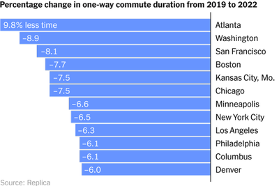

LIVE2hrs ago
Sam Bankman-Fried Is Found Guilty of 7 Counts of Fraud and Conspiracy
The FFt founder was found guilty of seven fraud and conspiracy charges in the schemes that cost customers billions. He could be sentenced 10 years in prison 6 MIN READ
A wild rise and an abrupt cash
Sam Barkiman-Fred gambled that his platform will make him a benevolent trillionaire. But after all fraud conviction, all bets are off. 6 MIN READ
People in tech are not outwardly obessed with the trial. The barely mustared a shrug 5 MIN READ
Isreal-Hamas War
- Updates
- What we know
- Maps
- Photos
- Isreals ground operation
- Jabiliya Airstrike
- Hamas Hostage
House passes aid bill for ISREAL not for Ukraine
The republican led house approved trillions for Isreal Hamas led war 8 MIN READ
Secretary of state approves the pushing if prime minister Antony Benjamin seemore
Isrealte ground troop shows up in gaza city,saterlite imagery shows
The law has limits. What does that mean for the Isrealite Hamas?
Trump Fruad in N.Y
- what we know
- Who is jude Engron?
- Trumps Vulnarable properties
Trumps sons cast the blame for Fruad on their companies accountant
Donald Trump jr and his brother cast he blame of their family business overluating their asssets 8 MIN READ
U.S investigating whether Adams recieved illegal donation from Turkey
Donald Trump jr and his brother cast he blame of their family business overluating their asssets 8 MIN READ
War has not stopped the kjv biennial it has multiplied it
Donald Trump jr and his brother cast he blame of their family business overluating their asssets 8 MIN READ
Senators plot to unblock military promotion as Turberville angers G.O.P
Donald Trump jr and his brother cast he blame of their family business overluating their asssets 8 MIN READ
Isreal is silencing internal critics 6 MIN READ
Learning to become open hearted 8 MIN READ
Recycled Kitchen Gadgets
6 MINS READNews
The latest target for carlifornia conservatives? School boards
Perantal opositions when childeren seek to change their gender 3 MIN READ
The Apple-Picking Apocalypse of Upstate New York
Eight straight weekends of rain have pushed the pick-your-own orchards toward financial disaster. 5 MIN READ
Saudi Arabia Is Set to Be Sole Bidder for 2034 World Cup
Australia announced it would not bid for the mens tournament, clearing the way for the Saudis to bring soccers biggest championship back to the Gulf 4 MIN READ
Will Lewis named Ceo
The Washington Post announces William Lewis as its new Publisher and CEO. Lewis will assume the role effective Jan. 2, 2024, succeeding interim CEO Patty Stonesifer who joined The Post in June 2023
AUTOWORKERS STRIKE A BLOW 4 MIN READ
AUTOWORKERS STRIKE A BLOW 4 MIN READ
AUTOWORKERS STRIKE A BLOW 4 MIN READ
AUTOWORK STRKE A BLOW 4 MIN READ
AUTOWORKERS STRIKE A BLOW 4 MIN READ
Cooking Recipes and guides
Vegetable Soups
Old Fashioned
Vegetable Soups
Rice pudding
Sasem Chicken

Butternut squash Lsanga pie
Culture and Lifestyle
What if Wine and Cida Had Babies ?
A geat number of wine producers are fermenting grape and apples and other fruits together or blending them to make wonderful beverages

Tv Review
All the light we can not see the blind girl and the nazi
A Netflix mini series brings to light Anthony Winning world war two romance 5 MIN READ
.jpg)
Here are the most anticipated films of the holy season
"The co;or purple" and "Poor things" and Beyonce lead a packed list 4 MIN READ
Netflix DVD Scoresese and Me
For a singulr marathon pf the film makers work the disc are vital 4 MIN READ
The Athletic Sports Coverage
John Calapri ws thhe king of school game basket ball one game changed everything
Kentucky and its coach have never quite been the same since a devastating Final Four loss in 2015.
He Shocked the Basketball World. Then the Basketball World Tried to Save Him.
The last time teammates heard from former N.B.A. player Delonte West, he was living outside of a 7-Eleven. Those who ve tried to help now “feel hopeless.”
She Was Attacked With an Iron Bar. 2 Years On, Her Former Teammate Faces Jail.
The aftershock of the assault on Kheira Hamraoui of Paris Saint-Germain has been felt far and wide — right to the top of Frances national team.
How Travis Kelces Unique Style Puts Him Above N.F.L. Peers
Family of Killed Northwestern State Football Player Sues University and Coach
The Top Women in Tennis Say the Sport Is Broken. This Is Why.
Well
How You Should Change Your Workout Once You Hit 405 MIN READ
An R.S.V. Shot for Infants Is in Short Supply. Heres What to Know. 5 MIN READ
What to Know About the New Dominant Covid Variant 5 MIN READ
How Do I Get Rid of Skin Tags? 5 MIN READ
How to Fall Back Without Missing a Beat 5 MIN READ
Wirecutter Product recommendations
Our 6 Favorite Pairs of Womens Jeans
Our recommendations include a unanimously adored ankle-length jean, a well-priced 90s throwback, a cool rigid denim high-rise and an American classic.
My Posture Changed Immediately. So Did My Life.
This laptop stand is a tiny tweak that will save your neck.
Floss So Good, You will Want to Eat It
Please don't.
Are There Cheap Products That Are Better Than Their Pricey Counterparts?
Our experts suggest these more-affordable products
The Top Women in Tennis Say the Sport Is Broken. This Is Why.
Games Daily Puzzle
Wordle
Guess the 5-letter word with 6 chances
Connections Companion
In case you need some puzzle help.

Connections
Group words that share a common thread.
Spelling
Subscribers can now play puzzles from previous days.
The crossword
Get clued in with wordplay
Letters boxed
Create words using letters aroun.

News
World News
Israeli airstrikes on Gaza City on Sunday. Israel-Hamas War: Israel Says It Has Isolated Gaza City After 'Large' Attack Five Wounded as Russian Missiles Strike Odesa, Damaging an Art Museum As Gaza Hospitals Collapse, Medical Workers Face the Hardest Choices
US news
Virtually all of the ambitious Democrats whose names who have surfaced as possible Biden alternatives have thrown their political support behind the president. Could a Prominent Democrat Really Challenge Biden? It's Unlikely, at This Point. Father Whose Son Is Accused of Parade Shooting Pleads Guilty to Misdemeanors The Times/Siena Poll Isn't the Only One Indicating an Unhappy Electorate
Political News
The scene in court on Monday before former President Donald J. Trump began testifying. Inside the Courtroom at Trump's Fraud Trial Could a Prominent Democrat Really Challenge Biden? It's Unlikely, at This Point. The Times/Siena Poll Isn't the Only One Indicating an Unhappy Electorate
New York
Federal agents raided Brianna Suggs's home as part of a corruption investigation into illegal foreign donations to the campaign. Mayor's 25-Year-Old Fund-Raising Chief in Spotlight After F.B.I. Raid Trump Civil Fraud Trial: Trump Assails Judge and Acknowledges Role Valuing His Empire’s Property Inside the Private World the Richest New Yorkers Built for Themselves Business
Business
Most Americans still have to commute every day. Here's how that experience has changed. Chatbots May 'Hallucinate' More Often Than Many Realize More Semiconductors, Less Housing: Chinas New Economic Plan
Technology
Amr Awadallah, the chief executive of Vectara, warns that its chatbot software doesn’t always tell the truth. Chatbots May 'Hallucinate; More Often Than Many Realize Tech Start-Ups Try to Sell a Cautious Pentagon on A.I. Another Google Antitrust Battle Reaches Court in Epic Games Case
Science
Tantan Dai of China, front left, on the second day of the World Sudoku Championship in Toronto. What it Takes to Wear the Sudoku Crown A Giant Leap for the Leap Second. Is Humankind Ready? NASA's Lucy Mission Set Its Sights on 1 Asteroid. It Found 2.
Sport
The Biggest N.F.L. Surprises at the Midseason Mark He Was Traded to Minnesota on Tuesday. Five Days Later, He Became a Hero. After Her Brother's Tragic Death, Notre Dame's Basketball Coach Finds Peace Obituaries
Obituaries
Zdenek Macal in 2010. His sound, rounded and warm, was ideally suited to the 19th-century repertoire with which he was most closely associated. Zdenek Macal, Conductor With an International Reach, Dies at 87 Walter Davis, Basketball Star With a Velvet Touch, Dies at 69 Robbin Bain, Pageant Winner and 'Today Girl,'' Is Dead at 87
The Upshot
How 7,500 More Reader Drawings Changed Our New York City Maps Why Biden Is Behind, and How He Could Come Back Cross-Tabs: October 2023 Times/Siena Poll of the 2024 Battlegrounds
Opinion
Opinion
Poll results show President Biden losing to Donald J. Trump by margins of four to 10 percentage points in key battleground states. With Poll Results Favoring Trump, Should Biden Step Aside? Trump May Not Need a Coup This Time Matthew Perry Told the Truth About Everything
Opinion Columnist
Virtually all of the ambitious Democrats whose names who have surfaced as possible Biden alternatives have thrown their political support behind the president. Could a Prominent Democrat Really Challenge Biden? It's Unlikely, at This Point. Father Whose Son Is Accused of Parade Shooting Pleads Guilty to Misdemeanors The Times/Siena Poll Isn't the Only One Indicating an Unhappy Electorate
Editorial
Nuclear Talks With China Are Essential and Long Overdue A Humanitarian Pause in Gaza New York City Deserves Better Than Mayor Adams's Scandals
Guest Essays
Matthew Perry Told the Truth About Everything What I Read to My Son When the World Is on Fire Republicans Have Chosen Nihilism
Sunday Opinion
Skyway, the main road leading in and out of Paradise. The thinned tree canopy allows those along the road to see across the canyon on the way to Magalia, a town where 3,000 structures were destroyed by the wildfire. What Happened When California Chose to Rebuild a Town Devastated by Wildfire Why Liberal Academia Needs Republican Friends When It Comes to Israel, Who Decides What You Can and Can not Say?
Arts
Arts
Kristin Draucker and other Paul Taylor Dance Company performers in Ulysses Dove's “Vespers,” which had its company debut on Saturday. At Paul Taylor, a Drum Circle and a Fierce Sisterhood Poland's Art World Awaits a Culture War Counteroffensive Boy George Will Join 'Moulin Rouge!'' on Broadway in 2024
Arts and Design
Opening night visitors survey a section of the 2023 Kyiv Biennial in Vienna. As well as in its hometown, the contemporary art show is taking place in two more Ukrainian cities, two in Poland, and in Berlin and Antwerp. Kyiv's Exiled Biennial Is the Most Energizing Exhibition of the Year Performa Keeps It Live and Real in the Age of TikTok Will the Art Market Need to Discount Its Masterpieces?
Movies
Cage knows what it's like to go viral. When a supercut of his freakout scenes was posted online, he recalled thinking, “This isn't what I had in mind when I decided to become a film actor.” With 'Dream Scenario,'' Nicolas Cage Reclaims the Memes Netflix DVDs, Scorsese and Me 'Nyad' Review: Neptune's (Estranged) Daughter
Television
Bass Reeves, played by David Oyelowo in the new Paramount+ series, was a Black lawman living by his rifle and his wits during Reconstruction. In 'Lawmen: Bass Reeves,'' Fiction Fills In Where Tall Tales Leave Off 'For All Mankind' Launches a Mission to Mars, With New Wrinkles 'Attack on Titan' Ends How Its Creator Always Envisioned
Music
From left, the Kronos Quartet at Carnegie Hall: David Harrington and John Sherba, violins; Hank Dutt, viola; and Paul Wiancko, cello. At 50, the Kronos Quartet Is Still Playing for the Future Taylor Swift's Blockbuster '1989' Rerecording Tops Sales of Original Review: Anthony Davis's Malcolm X Opera Finally Arrives at the Met
Theater
The “Spamalot” revival's cast includes, from left, Jimmy Smagula, Taran Killam, Nik Walker and Michael Urie. “There is an intelligence about their absurdity,” Killam, who plays Lancelot, said of Monty Python. It Is Not Dead Yet! 'Spamalot' Returns to Broadway. (Cue the Coconuts.) In 'Food,'' Geoff Sobelle Explores the Extremes of Eating Poland's Art World Awaits a Culture War Counteroffensive
Dance
Shawn Lesniak and Alex Clayton of the Paul Taylor Dance Company in the premiere of Lauren Lovette's “Echo.” At Paul Taylor, the Music Calls for a Dance. The Men Respond. Review: In 'Köln Concert, Dancing Like Everyone's Watching Joey Evans Is Back. This Time He's a Struggling Artist.
Book Review
Can the Parole Process Make Prison Sentences More Just? For Stephanie Land, College Was the School of Hard Knocks The Hard-Partying College Kids Who Were Also Drug Lords
Lifestyle
Style
Vapes Look 'Like Toys Now. Uh-Oh. Why Donnot Womens Clothes Have More Pockets? Forget Aerodynamics: Running the Marathon in Style
Food
For Chinese speakers, food-delivery apps in their native language are a gateway to restaurants like Maxis Noodles in Flushing, Queens. Food Apps Catering to Chinese Speakers Deliver a Piece of Home How Chefs Eat With the Marathon in Mind A Fast, Foolproof Carbonara for Orzo Lovers
Well
Some Covid Vaccines Are Still Hard to Find What to Know About Seasonal Depression How to Fall Back Without Missing a Beat The New York Times Magazine
The New York Time
A Beginners Guide to Looking at the Universe Befouling the Final Frontier Bariatric Surgery at 16
T Magazine
Marcel Dzama at his Brooklyn studio, wearing a papier-mâché mask of a bull that he made in 2013 based on a painting by the Dadaist artist Francis Picabia. The Man Behind 250 Masks This Seasons Most Striking Sculptural Bags In the Catskills, Seasonal Farmhouse Dinners With House-Made Beer
Travel
The “Spamalot” revival's cast includes, from left, Jimmy Smagula, Taran Killam, Nik Walker and Michael Urie. “There is an intelligence about their absurdity,” Killam, who plays Lancelot, said of Monty Python. It Is Not Dead Yet! 'Spamalot' Returns to Broadway. (Cue the Coconuts.) In 'Food,'' Geoff Sobelle Explores the Extremes of Eating Poland's Art World Awaits a Culture War Counteroffensive
Love
Shawn Lesniak and Alex Clayton of the Paul Taylor Dance Company in the premiere of Lauren Lovette's “Echo.” At Paul Taylor, the Music Calls for a Dance. The Men Respond. Review: In 'Köln Concert, Dancing Like Everyone's Watching Joey Evans Is Back. This Time He's a Struggling Artist.
Real Estate
Can the Parole Process Make Prison Sentences More Just? For Stephanie Land, College Was the School of Hard Knocks The Hard-Partying College Kids Who Were Also Drug Lords